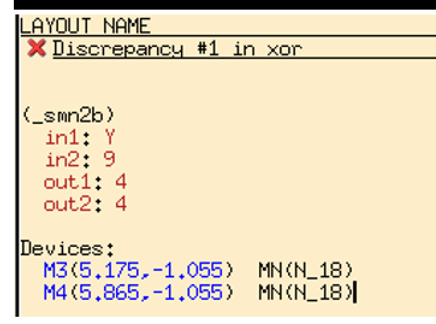

主題：Calibre LVS 顯示 Discrepancy #1 in xor，錯誤集中在 M3、M4 兩顆 NMOS 的節點連接。
問題類型：LVS mismatch疑似位置：下方 NMOS diffusion主要原因：node short / diffusion sharing 錯誤這不是單純的 DRC 問題，而是 LVS（Layout Versus Schematic）不一致。也就是 Calibre 認為你的 Layout 版圖萃取出來的電路，跟 Schematic / SPICE netlist 的 XOR 電路 不完全相同。

Discrepancy #1 in xor (_smn2b) in1 : Y in2 : 9 out1: 4 out2: 4 Devices: M3 MN(N_18) M4 MN(N_18)
| 欄位 | 意義 |
|---|---|
| _smn2b | Calibre 萃取到的一組 NMOS 連接結構，通常代表兩顆 NMOS 的連接關係有疑問。 |
| in1: Y | 某一端在 schematic 中應接到 Y。 |
| in2: 9 | 另一端在 layout 被萃取成 node 9。 |
| out1/out2: 4 | 兩個輸出端被萃取到同一個 node 4，表示某些 diffusion 或 metal 可能被短接。 |
| M3、M4 | 錯誤相關元件是兩顆 NMOS，不是 PMOS，也不是 inverter 的 PMOS/NMOS。 |
從你的 XOR layout 判斷，最可疑的是 下方 NMOS active / ndiff 區域。XOR 不是像 NAND 那樣所有串接 NMOS 都可以直接共用 diffusion。XOR 有交叉控制訊號，例如 A、A'、B、B'，如果 diffusion sharing 的順序或節點不對，就會把不該相連的節點接在一起。
NAND 的 NMOS 是單純串聯，所以中間 node 本來就應該相接，diffusion sharing 通常是正確且省面積的。
XOR 的 NMOS / PMOS 網路有交叉邏輯，控制訊號包含 X、Y、X'、Y'。如果依照外觀看起來很省面積的方式把 diffusion 連成一整條，LVS 可能會萃取成錯誤的 source/drain node。
| 可能原因 | 機率 | 說明 |
|---|---|---|
| M3 / M4 diffusion short | 最高 | LVS 直接指出 M3、M4，且錯誤型態像 source/drain node 不一致。 |
| Metal1 橫線誤接 | 中等 | 若 M1 橫向連線跨過不該接的 contact，也會造成 node short。 |
| Pin label 放錯 net | 中等 | 若 pin name 或 label 沒有放在真正連接的 metal 上，LVS 也會配錯。 |
| 多長出一顆 MOS | 較低 | 若 poly 不小心跨過 active，會產生 extra transistor；但這次訊息主要指 M3/M4 node mismatch。 |
請回到 schematic，把 M3、M4 的四個端點逐一列出：
| 元件 | Drain | Gate | Source | Body |
|---|---|---|---|---|
| M3 | 依 schematic | 可能是 X 或 X' | 依 schematic | GND |
| M4 | 依 schematic | 可能是 Y 或 Y' | 依 schematic | GND |
| X | Y | F = X ⊕ Y |
|---|---|---|
| 0 | 0 | 0 |
| 0 | 1 | 1 |
| 1 | 0 | 1 |
| 1 | 1 | 0 |
本次 XOR layout 在進行 Calibre LVS 驗證時出現 Discrepancy #1，錯誤訊息指出問題與 M3、M4 兩顆 NMOS 有關，並顯示 in1、in2、out1、out2 的節點對應不一致。由此判斷，問題不是元件尺寸或一般 DRC spacing 錯誤，而是 layout 中 NMOS source/drain 的連接關係與 schematic 不一致。最可能的原因是下方 NMOS diffusion sharing 設計錯誤，使 M3、M4 之間本應分離的節點被 active diffusion 或 metal 線短接。
在 NAND 或 NOR 這類較規則的 CMOS gate 中，串聯或並聯 transistor 常可利用 diffusion sharing 來節省面積；然而 XOR 電路具有 X、Y、X'、Y' 的交叉控制網路，若未逐一確認每顆 MOS 的 source/drain node，就容易把不同邏輯節點誤接成同一個 net。因此修正方式是利用 Calibre RVE highlight 錯誤元件 M3、M4，回到 layout 檢查下方 ndiff 與 contact 位置，將不應共用的 diffusion 切開，再以 Metal1 或 Metal2 依照 schematic 重新連接。修正後需重新執行 DRC 與 LVS，確認沒有 design rule violation，且 LVS 顯示 layout 與 schematic 完全一致。
| 項目 | 判斷 |
|---|---|
| 錯誤類型 | LVS mismatch，不是單純 DRC。 |
| 錯誤元件 | M3、M4 兩顆 NMOS。 |
| 最可能原因 | 下方 NMOS diffusion sharing 錯誤，造成 node short。 |
| 優先檢查 | M3/M4 source、drain 是否和 schematic 對應；是否有不該連續的 ndiff。 |
| 修正方法 | 切開 diffusion，重新用 metal 按 schematic 連線，重放 pin label。 |
| 驗證順序 | 先 DRC，再 LVS，最後 PEX 與 post-sim。 |